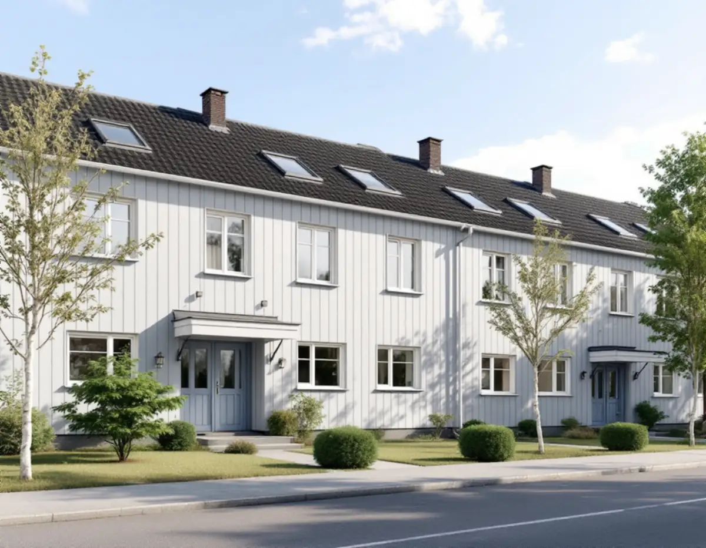
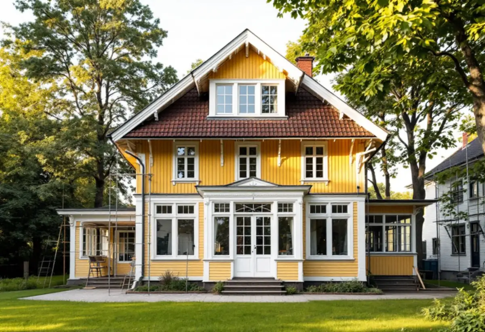

Platsbesök
Vi tittar på panel, snickerier och fönster och gör skrapprov för att se vilken färg som sitter på.
I Sollentuna handlar målning oftast om en av två hustyper: en äldre villa med kupor och snickerier i någon av villastäderna, eller ett radhus i en länga där grannarna har samma fasad. Båda kräver att kulören stäms av innan arbetet börjar – den ena mot kulturmiljön, den andra mot helheten i gruppen. Geal Entreprenad AB tar målningsuppdrag i hela kommunen, med gratis platsbesök och skriftligt kostnadsförslag.

Villor från seklets början. Enligt kommunens översiktsplan kom de första villastäderna med järnvägen från 1866 och stationerna i Tureberg och Norrviken. På villor från den tiden tar knutbrädor, foder och spröjsade fönster ofta lika mycket tid som själva panelen.
Villaområden från mellankrigstiden. Översiktsplanen nämner att många villaområden planerades på 1920- och 30-talen. På de husen är det ofta panel som har strukits om i flera omgångar med olika färger, och skrapprov visar vilken färgtyp som ligger överst.
Radhuslängor. I radhusområdena har husen i en länga oftast samma ålder, panel, fönster och kulör. Det gör att flera grannar får samma behov ungefär samtidigt.
Nyare radhus och villor. På yngre fasader är det ofta skivmaterial, fabriksgrundad panel och moderna täckfärger som gäller.

Kommunens översiktsplan säger att radhus och sammanhållna husgrupper får förändras, men att varje förändring ska bidra positivt till helheten. På en länga där alla hus har samma kulör syns ett avvikande hus på långt håll. Det är därför klokt att prata med grannarna, och med samfälligheten om det finns en, innan någon beställer en ny färgsättning.
Kommunen skriver också att reglerna för fasadändring utan lov ser olika ut för radhus, kedjehus och andra sammanbyggda småhus, beroende på hur bebyggelsen är utformad. Kontaktcenter kan vägleda om vad som gäller för just din länga.
Praktiskt finns det fördelar med att flera grannar målar samtidigt. Ställning, tvätt och torktider kan planeras gemensamt, och kulören blir densamma över hela längan i stället för att nyanserna glider isär med åren. Varje hushåll gör sitt eget rotavdrag på sin del av arbetet.
Sedan 1 december 2025 krävs normalt inget bygglov för att byta kulör på ett en- eller tvåbostadshus, enligt Boverket. Sollentuna kommun skriver att lov ändå krävs om fastigheten ligger i ett kulturhistoriskt värdefullt område eller om byggnaden i sig är kulturhistoriskt värdefull. Kommunen betonar dessutom att du som byggherre ansvarar för att även en lovfri ändring är anpassad till husets och områdets karaktär och följer detaljplanen, och att vissa detaljplaner har bestämmelser om fasadmaterial.
Osäker på om huset ligger i ett värdefullt område? Kommunen gör en bedömning om du skickar in foton på huset från alla väderstreck och beskriver vad du vill göra. Du kan också söka ett frivilligt bygglov och få ett beslut på att ändringen uppfyller kraven. Äldre ritningar på huset finns i kommunens bygglovsarkiv utan kostnad, och de kan visa hur fasaden var tänkt från början.
Den kulturmiljöplan Sollentuna använder i dag är från 1993, med tillägg från 2002. Kommunen skriver själv att den inte uppfyller dagens krav och att det är otydligt vilka byggnader och miljöer som är särskilt värdefulla. Därför tas en ny plan fram efter ändringarna i plan- och bygglagen från december 2025. En inventering gjordes under hösten 2025, och målet är att planen ska antas våren 2027.
För den som ska måla en äldre villa betyder det att bedömningen kan ändras. Översiktsplanen hänvisar redan nu till Norrvikens villastad, Väderholmen och Skansen som områden där karaktären ska behållas. Ligger ditt hus där är det säkrast att utgå från husets ursprungliga färgsättning eller att fråga kommunen först.
Översiktsplanen lyfter den gröna lummigheten i villastaden som något som ska värnas. Det betyder uppvuxna träd nära husen och fasader som står i skugga stora delar av dagen, särskilt nära Edsviken och sjön Norrviken. Där behöver påväxt tvättas bort och panelen få torka ordentligt innan den målas, och det kan vara läge att se över takmålning eller rännor i samma veva som ställningen ändå står uppe.
Vi tittar på panel, snickerier och fönster och gör skrapprov för att se vilken färg som sitter på.
Vi går igenom detaljplan och kulturmiljö, och på radhus hur kulören förhåller sig till resten av längan.
Underarbete, färgtyp, antal strykningar och ställning står med – för flera grannar samordnat om ni vill.
Tvätt, skrapning, lagning av skadat trä och kittning av fönster.
Grundning och strykningar med de torktider färgen kräver.
Vi går igenom resultatet tillsammans och bättrar där det behövs.
Skatteverket räknar målning av fasader, fönster, väggar, tak och golv samt tapetsering som rotarbete i småhus, men inte målning av staket eller murar. Avdraget är 30 procent av arbetskostnaden, högst 50 000 kr per person och år, och ROT och RUT får sammanlagt vara högst 75 000 kr. Färgen räknas som material och ger inget avdrag.
I ett radhus gör varje ägare avdrag för arbetet på sitt eget hus. Geal drar avdraget direkt på fakturan.
På en sekelskiftesvilla är det mängden snickerier, kupor och spröjsade fönster och husets höjd som väger tyngst. På ett radhus styrs priset mer av panelens skick och hur mycket som behöver skrapas. Om flera grannar målar samtidigt kan ställning och etablering delas. Vi gör ett gratis platsbesök och lämnar ett skriftligt kostnadsförslag.
Fasad, fönster och invändig målning.
Målare i Stockholm →Takbyte, takbesiktning och plåtarbeten.
Takläggare i Sollentuna →Norrviken, Tureberg och Edsberg.
Takrenovering i Sollentuna →Radhus, villa och en extra bostad.
Attefallshus i Sollentuna →Tillbyggnad, tomtdelning och lov.
Byggföretag i Sollentuna →Ny kulör och lov i villastaden.
Fasadmålning i Sollentuna →Buller, ljudglas och radhus i Sollentuna.
Fönsterbyte i Sollentuna →Täta gamla fönster med ventilationen i åtanke.
Fönsterrenovering i Sollentuna →Radhus i Sjöberg och villor nära stationerna.
Golvläggare i Sollentuna →Massivt trä eller lamell – vad går att slipa.
Golvslipning i Sollentuna →Villastad och radhuslängor.
Köksrenovering i Sollentuna →Radhusplåt, bleck och rännor i Sollentuna.
Plåtslagare i Sollentuna →Ansökan, solceller och radhus.
Takbyte i Sollentuna →Ny tapet efter prov av väggen.
Tapetsering i Sollentuna →På höjden, nya byggregler och ritningar.
Tillbyggnad i Sollentuna →Radon med i planen för hela huset.
Totalrenovering i Sollentuna →